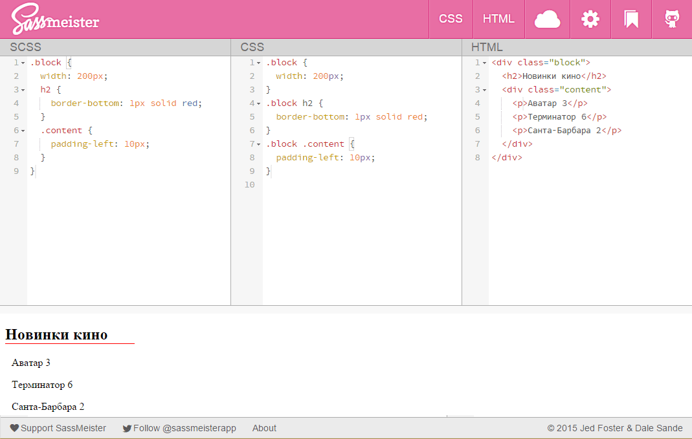
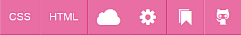
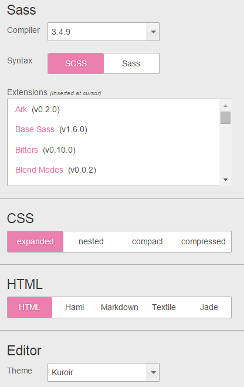

Сайт SassMeister
Одним из удобных онлайновых инструментов для редактирования Sass и получения на выходе готового CSS является сайт SassMeister, находящийся по следующему адресу.
sassmeister.com
Это целая площадка для набора текста и просмотра полученного результата в реальном времени.
Поддерживается разный синтаксис, подсветка кода, множество расширений, выбор тем.
У сайта есть четыре основных панели — Sass, CSS, HTML и результаты.
Редактировать можно только Sass и HTML.
Код CSS получается автоматически из Sass и напрямую его править нельзя.
В результате отображается итоговая веб-страница после применения стилей.
Через верхнее меню можно выбирать показ панелей, оставляя только Sass или всё вместе.
В меню имеются такие пункты.
CSS — отключить панель CSS.
Это лучше делать при наборе команд Sass и экспериментах с кодом.
При включенной панели компиляция происходит после любого чиха, что приводит к частому появлению ошибок.
HTML — отключить панель HTML.
Если у вас нет кода HTML и вы работает только со стилем, то эту панель желательно отключить, чтобы не занимала место.
Облако — после входа на GitHub вы можете через этот пункт меню сохранять свой код и очищать все панели.
Заметим, что последний набранный код сохраняется в браузере автоматически и без регистрации на GitHub.
Настройки — через это меню можно выбрать синтаксис, добавить внешнюю библиотеку, установить стиль форматирования, выбрать тему и др.
Закладка — позволяет простым перетаскиванием добавить сайт в закладки браузера.
GitHub — вход на GitHub.
В настройках подключаются дополнительные библиотеки расширяющие функционал кода и выбирается способ форматирования получающегося CSS.
Имеются такие варианты.
expanded (расширенный) — традиционный вывод стилевых правил, все селекторы равнозначны и выводятся в едином виде.
nested (с вложениями) — правила с вложенными селекторами сдвигаются вправо относительно родительского селектора.
compact (компактный) — каждый селектор выводится на отдельной строке, все стилевые правила объединяются в одну строку.
compressed (сжатый) — все стилевые правила объединяются в единственную строку.
Если залогиниться через GitHub, то результаты сохраняются на сайте gist.github.com при нажатии на облачко.